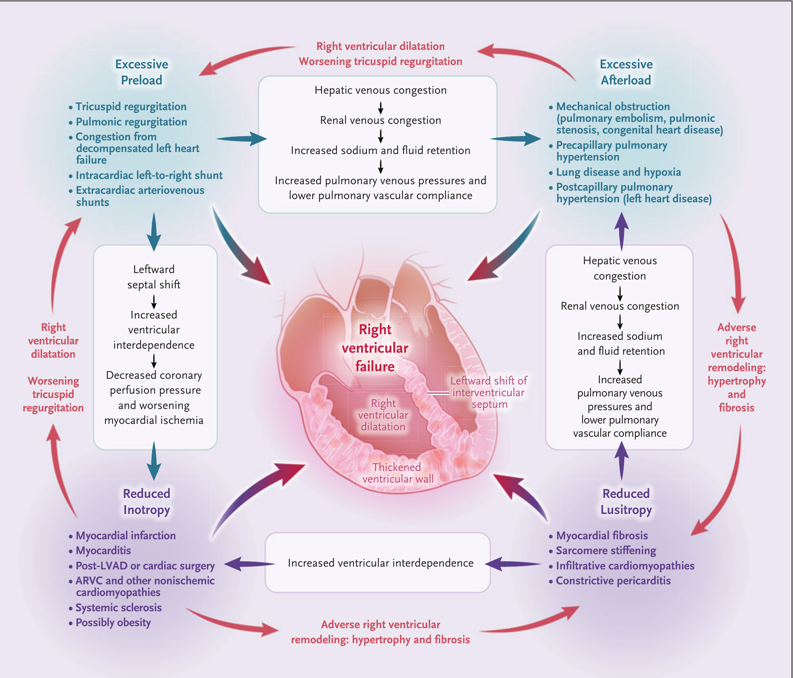
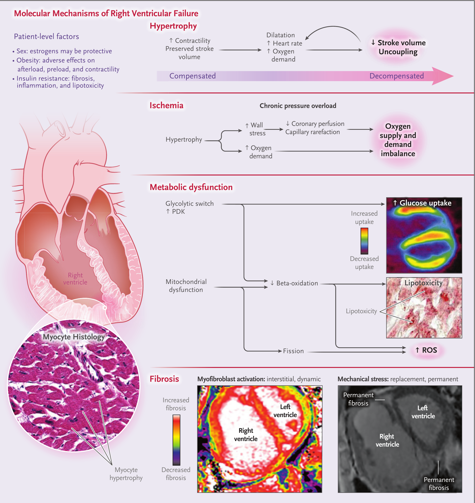
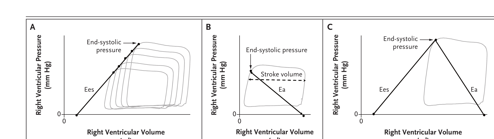
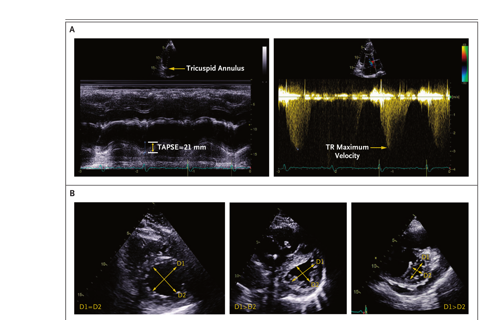

本ページで使用する略語一覧
| RV | Right Ventricle — 右室 |
| LV | Left Ventricle — 左室 |
| PH | Pulmonary Hypertension — 肺高血圧症 |
| PAH | Pulmonary Arterial Hypertension — 肺動脈性肺高血圧症（PHの第1群） |
| TR | Tricuspid Regurgitation — 三尖弁逆流 |
| TAPSE | Tricuspid Annular Plane Systolic Excursion — 三尖弁輪収縮期移動距離 |
| PASP | Pulmonary-Artery Systolic Pressure — 肺動脈収縮期圧 |
| RVSP | Right Ventricular Systolic Pressure — 右室収縮期圧 |
| RAP | Right Atrial Pressure — 右房圧 |
| PAWP | Pulmonary-Artery Wedge Pressure — 肺動脈楔入圧 |
| PVR | Pulmonary Vascular Resistance — 肺血管抵抗 |
| Ees | End-Systolic Elastance — 収縮末期エラスタンス（負荷非依存性の収縮性指標） |
| Ea | Effective Arterial Elastance — 実効動脈エラスタンス（後負荷の指標） |
| RV-PA coupling | Right Ventricular–Pulmonary Arterial Coupling — 右室・肺動脈カップリング（Ees:Ea比） |
| PAPi | Pulmonary Artery Pulsatility Index — 肺動脈拍動係数 |
| RHC | Right Heart Catheterization — 右心カテーテル検査 |
| MRI | Magnetic Resonance Imaging — 磁気共鳴画像（心臓MRI） |
| BNP | Brain Natriuretic Peptide — 脳性ナトリウム利尿ペプチド |
| ECG | Electrocardiogram — 心電図 |
| ARVC | Arrhythmogenic Right Ventricular Cardiomyopathy — 不整脈源性右室心筋症 |
| LVAD | Left Ventricular Assist Device — 左室補助人工心臓 |
| RVAD | Right Ventricular Assist Device — 右室補助人工心臓 |
| VA-ECMO | Venoarterial Extracorporeal Membrane Oxygenation — 静脈・動脈体外式膜型人工肺 |
| CTEPH | Chronic Thromboembolic Pulmonary Hypertension — 慢性血栓塞栓性肺高血圧症 |
| PE | Pulmonary Embolism — 肺塞栓症 |
| PDE5 | Phosphodiesterase 5（inhibitor） — ホスホジエステラーゼ5（阻害薬） |
| ERA | Endothelin Receptor Antagonist — エンドセリン受容体拮抗薬 |
| WSPH | World Symposium on Pulmonary Hypertension — 世界肺高血圧シンポジウム（PHの5群分類） |
| ILD | Interstitial Lung Disease — 間質性肺疾患 |
本総説の要点
かつて右室は「受動的な導管」にすぎないと考えられていた。1943年にStarrらがイヌの右室を高度に損傷させても末梢静脈うっ血の増加がわずかだったことから「右心の弱さは…重要性が低い」と結論した経緯がある。しかしその後、Fontan術後の健常者でも運動耐容能が40%低下することが示され、右室が健常時ですら重要であることが明らかになった。今日では、左心不全・肺動脈性肺高血圧症（PAH）・さらにはSARS-CoV-2感染に至るまで、右室は病態生理的にも予後的にも決定的な役割を担うと理解されている。
右室と左室は独立した構造ではなく、心室中隔を介して解剖学的・生理学的に統合されており、右室はその収縮機能の相当部分を左室に依存する。この相互依存は右室不全の状況で増強される。本総説は右室不全の病態生理・診断・病態別アプローチ・治療を、研修医・ICU医が実践に使える形で整理する。
SECTION 1 4つの規定因子 ― 前負荷・後負荷・収縮性・弛緩性
右室機能を決める4因子と「機械的メカニズム」
右室機能の主な規定因子は、左室と同様に前負荷・後負荷・収縮性（変力性）・弛緩性（拡張早期の能動的弛緩）である。右室不全の機械的メカニズムは、右室負荷（前負荷／後負荷）または心筋機能（収縮性／弛緩性）の急性・慢性の異常として概念化できる。臨床上はこれらがしばしば併存・相互増悪する点が重要である（Figure 1）。
右室は発生学的に二次心臓領域から三日月形の薄壁構造として形成され、最も前方に位置し胸骨直下にある。心室中隔の筋線維は螺旋状配列により主に長軸方向の収縮を生み、右室自由壁の周方向線維は横方向の短縮に寄与する（正常生理では後者は目立たない）。
4カテゴリの相互増悪（悪循環）

SECTION 2 細胞・分子メカニズム ― 肥大・虚血・代謝・線維化
適応から不適応へ（homeometric → heterometric）
右室不全を惹起・促進する過程には、心筋肥大・線維化・虚血・神経体液性活性化・炎症・代謝基質シフトが含まれる（Figure 2）。分子メカニズムの大半のデータは動物モデルまたはPAHの臨床研究に由来し、他の原因による右室不全にどこまで当てはまるかは不明である。
いかなる原因でも慢性的な後負荷増大は右室肥大をきたす。当初は適応的（収縮性増加・一回拍出量維持＝homeometric adaptation）で、神経体液性活性化と交感神経緊張の亢進で達成される。しかし左心不全と同様、神経体液性活性化はやがて不適応となり、右室β1受容体密度の低下・組織アドレナリン作動性エフェクターの枯渇・β刺激への反応性低下を特徴とする。収縮性が低下するか後負荷がさらに増すと、右室は一回拍出量を保つために拡大せざるを得ない（heterometric adaptation）。
虚血・線維化・代謝シフト
虚血：肥大による壁応力増大と毛細血管希薄化（capillary rarefaction）で酸素需要増大と冠灌流低下のミスマッチが生じる。PH患者では右室虚血と右冠動脈血流低下が報告され、右室質量・拡張末期圧（＝壁応力）に比例する。最終的に需要が供給を上回り、収縮性がさらに低下して心室・動脈の脱共役（uncoupling）と右室不全に至る。
線維化：機械的ストレス・虚血・神経体液性活性化が心臓線維芽細胞のコラーゲン産生を促す。病初期のコラーゲン増加は右室拡大への保護的役割をもつが、線維化が進むと拡張機能と興奮収縮連関が悪化し収縮性が障害される。線維化は中隔の付着部（septal insertion point）で最も顕著で、自由壁にもみられる。コラーゲン量は原因により異なり、全身性強皮症関連PAHで最も高く、先天性心疾患によるPHで低い。
代謝：成人の右室はエネルギーの60〜90%を脂肪酸酸化で得る。進行性肥大は相対的低酸素を生み、HIF-1活性化→解糖系酵素の亢進と脂肪酸酸化の抑制を招く。慢性PH患者では右室グルコース取り込みが顕著で、右室機能と逆相関し、肺血管拡張薬治療で部分的に可逆である。この代謝シフトが保護的か不適応かは臨床・実験研究からは明確でない。

SECTION 3 修飾因子 ― 性差・糖尿病・肥満
インスリン抵抗性・肥満・性差
糖尿病・インスリン抵抗性：右室機能障害の修飾可能なリスク因子となりうる。糖尿病は拡張型心筋症やPAHにおいて右室収縮・拡張機能の悪化と関連し、合併症のない糖尿病・前糖尿病でも右室リモデリングがみられる。機序として心筋線維化・炎症・微小血管虚血・脂肪毒性の促進が想定される。
肥満：右室の前負荷・後負荷・収縮性への直接・間接効果を介して右室機能障害に寄与する。肥満を伴うHFpEF患者は、非肥満HFpEFや健常者と比べて肺動脈圧上昇・右室拡大・右室サルコメア機能障害・心室相互依存と心膜拘束の増強を示し、両心室の機能を損なう。睡眠呼吸障害も寄与因子であり、循環性炎症性アディポカイン増加・脂肪毒性・低換気/睡眠時無呼吸による低酸素が肺・体血圧を上昇させる。
性差：エストロゲンは保護的に働く可能性が示唆されている（Figure 2 の患者レベル因子）。
SUMMARY 第1章のキーメッセージ
SECTION 4 病歴・身体所見・バイオマーカー・心電図
初期評価は丁寧な病歴と身体所見から
右室不全の症状は共通だが非特異的で、呼吸困難・下腿浮腫・早期満腹感・腹部膨満・倦怠感・運動耐容能低下・右季肋部痛などがある。示唆する病歴として、冠動脈疾患・左心不全・弁膜症・慢性肺疾患・静脈血栓塞栓症・結合組織病・HIV感染がある。社会歴では喫煙（肺疾患）・食欲抑制薬（anorexigen）の使用が重要。特発性とされるPAHの最大20%は遺伝性変異を伴うため、PAHの家族歴聴取が重要である。
身体所見：頸静脈圧上昇、右室heave（触診）、II音肺動脈成分の亢進（PHを示唆）、TR雑音、拍動性肝腫大（臨床的に有意なTR）、肝頸静脈逆流、腹水、下腿浮腫。BNP上昇は感度は高いが非特異的で、特に左心不全がない状況で右室機能障害の傍証となる。ECGは右房拡大・右軸偏位・右室肥大の所見を示しうる。
Table 1. 右室不全の診断・評価ツールと所見
| 診断ツール | 所見・評価項目 |
|---|---|
| 詳細な病歴 | 右心不全症状（呼吸困難・早期満腹感・腹部膨満・下腿浮腫・右季肋部痛・運動耐容能低下・倦怠感）。関連疾患（冠動脈疾患・左心不全/弁膜症・慢性肺疾患・静脈血栓塞栓症・結合組織病・HIV感染）。社会歴（喫煙・違法薬物・食欲抑制薬）。家族歴（PAH・左心不全・心臓突然死・ARVC）。 |
| 身体所見 | 頸静脈圧上昇、右室heave、II音肺動脈成分（P2）亢進、TR雑音、拍動性肝腫大、肝頸静脈逆流、腹水、下腿浮腫。 |
| 血清バイオマーカー | BNP上昇。 |
| 心電図 | 右房拡大、右室肥大、右軸偏位。 |
| 心エコー | 右室特異的指標：TAPSE、TAPSE:PASP比、三尖弁輪側壁の組織ドプラ速度、面積変化率（FAC）、右室ストレイン、右室肥大、右房径。容積・駆出率（三次元）、三尖弁/肺動脈弁逆流、下大静脈径と虚脱、中隔の左方変位。左心疾患：左室肥大・左房径・僧帽/大動脈弁膜症・左室駆出率・拡張障害・心内シャント。 |
| 心臓MRI | 右室容積（収縮末期・拡張末期）、右室駆出率、遅延ガドリニウム造影/線維化、右室・右房ストレイン、左心疾患、心内シャント、心膜評価。 |
| 右心カテーテル | RAPと右室拡張末期圧、肺動脈圧（PH検出）、PVR、肺動脈コンプライアンス、肺動脈実効エラスタンス、PAWP（左房圧推定）、心拍出量/係数、一回拍出量/係数、肺動脈酸素飽和度、RAP:PAWP比、PAPi、（負荷による）右室予備能の測定。 |
ARVC＝不整脈源性右室心筋症、PAPi＝肺動脈拍動係数、RAP＝右房圧、PASP＝肺動脈収縮期圧、PAWP＝肺動脈楔入圧、TAPSE＝三尖弁輪収縮期移動距離。
SECTION 5 圧容量関係とRV-PAカップリング（リファレンス標準）
Ees / Ea / カップリング比の考え方
右室収縮性・機能評価のリファレンス標準（主に生理学的研究）は、コンダクタンスカテーテルを用いた圧容量関係（pressure–volume loop）に依拠する（Figure 3）。1つのループは1心拍を表し、ループ幅が一回拍出量に相当する。前負荷を変化させて一連のループを作り、各ループの収縮末期点を結ぶ直線の傾きが収縮末期エラスタンス（Ees）＝負荷非依存性の収縮性指標である。後負荷（より正確には実効肺動脈エラスタンス Ea）は収縮末期圧÷一回拍出量で推定する。EaはPVRと比べ、抵抗性と拍動性の両成分を反映するためより包括的な後負荷指標である。
Ees:Ea比は右室収縮性と後負荷のカップリングを表す無次元量（RV-PAカップリング）である。最適比（心室から循環への位置エネルギー移行が最大となる比）は1.5〜2.0。PHでは当初 Ees が増加して Ea 増加を相殺しカップリングを維持するが、収縮予備がなくなると Ea が不均衡に増大し、比 0.6〜0.8 未満で脱共役（uncoupling）＝予後不良となる。これら侵襲的手法は複雑・高コストで臨床応用は限られ、前負荷操作を要さない単拍法やMRI/三次元エコーとの組合せ法が開発されている。

SECTION 6 心エコー ― TAPSE・TAPSE:PASP・偏心率指数
第一選択のスクリーニングツール
右室機能障害が疑われる患者は経胸壁心エコーを受けるべきで、右室サイズ・機能の迅速評価とPASP推定が大半の患者で可能である。再現性が高く予後的価値をもつ定量指標として、TAPSE、三尖弁輪側壁の組織ドプラ速度、面積変化率（FAC）がある。さらにTAPSE:PASP比はRV-PAカップリングのリファレンス標準と少なくとも中等度に相関する（Figure 4A）。右室自由壁長軸ストレインは右室機能障害の鋭敏な指標として台頭し、広範な心血管疾患で予後的である。
中隔の評価：拡張期の中隔平坦化は容量負荷、収縮期の平坦化は圧負荷を示す。中隔左方変位は偏心率指数（eccentricity index）＝前後径(D1)÷中隔側壁径(D2)で定量し、1より大で右室負荷を示す（Figure 4B）。下大静脈の拡大・吸気時虚脱消失は右房圧上昇を示す。エコーは左室サイズ・左房サイズ・収縮/拡張機能・弁機能・心膜拘束も迅速に評価でき、右室不全の原因の鑑別を狭めるのに役立つ。

SECTION 7 心臓MRI・右心カテーテル・右室予備能
心臓MRI ― 右室評価のリファレンス標準
心臓MRIは多断面で右室を描出でき、右室サイズ・右室駆出率・質量評価のリファレンス標準である。右室駆出率・一回拍出量係数・右室収縮末期容積係数は予後・リスク層別に有用。一回拍出量÷収縮末期容積（RV-PAカップリングの簡易代理）は右室駆出率と非線形に関連し、特に駆出率が軽〜中等度低下のとき変化への感度が高い。エコーに対する利点として組織性状評価があり、造影MRIで右室中隔・自由壁の線維化を置換性（永続的瘢痕）か間質性（動的・修飾可能）かとして定量できる。自由壁の形態・運動・線維脂肪置換の評価はARVC疑いの診断に役立つ。
右心カテーテルと右室予備能
右心カテーテルは心内圧・肺動脈圧と心拍出量を直接測定し、右室前負荷（RAPまたは右室拡張末期圧）・後負荷（PVR・肺動脈コンプライアンス・肺動脈エラスタンス）を推定する。一回拍出量・RAP:PAWP比・右室一回仕事量係数・PAPiなどの代理指標が算出できる。近年、これら血行動態指標とヒト右室中隔心筋の機能を比較した研究で、PAPiが最大心筋収縮力と最も強く相関した（Aslamら）。ただし圧は血管内・心室内容量と常に相関するわけではなく、圧のみの前負荷推定には重要な限界がある。
右室予備能：運動や変力刺激による負荷で右室を評価することに、付加的な診断・予後価値があるエビデンスが増えている。右室予備能（固定された負荷条件下で収縮性を増す能力）は安静時指標よりRV-PAカップリングと密接に関連しうるが、最良の評価法はまだ確立していない。
SUMMARY 第2章のキーメッセージ
SECTION 8 過剰前負荷の病態 ― TR・シャント
三尖弁逆流と心内・心外シャント
TRはよく同定され、重症度はエコーで評価する。急性TRは感染性心内膜炎や三尖弁・弁下組織の医原性損傷で生じる。イヌの急性可逆性TRモデルでは、TR開始時に右室充満圧上昇と心拍出量・大動脈圧の低下が示された。ただし急性TRは重症でも、右室後負荷が正常なら当初はよく耐えられる。慢性の過剰前負荷は右側弁逆流・心内左右シャント・心外動静脈シャントで起こりうる。心内シャントはバブルコントラストエコーで検出でき、右心カテーテル時の酸素飽和度測定（shunt run）で部位特定と定量が可能。
全身性動静脈シャントはTRや心内シャントと異なり体血管抵抗低下と総心拍出量増加をきたすが、動静脈瘻/グラフト作成は慢性右室拡大と右室収縮機能低下を招き、いずれも動静脈瘻血流量と関連する。血流量は超音波や右心カテーテルで推定できる。
SECTION 9 過剰後負荷の病態 ― 急性肺塞栓・PH
急性後負荷増大は右室に耐えがたい
後負荷の急性増大は右室に耐えがたい（poorly tolerated）。古典例が急性肺塞栓で、臨床・検査前確率評価と画像（通常はCT肺動脈造影、まれに換気血流シンチ）で診断する。エコーでは右室拡大/機能障害・PASP推定値上昇に加え、右室中部自由壁の無収縮と心尖部過収縮（McConnell徴候）がみられることがある。急性肺障害も右室後負荷を急速・急性に増大させ、陽圧換気の影響でさらに悪化しうる。
慢性後負荷増大＝PHの発症：エコーが後負荷増大とその帰結（右室拡大・機能障害）を検出する初期スクリーニングツール。PHは血行動態的診断であり右心カテーテルで確定する。PHの診断アルゴリズムを含む包括的レビューが近年公表されている。
SECTION 10 収縮不全の病態 ― RV梗塞・術後・LVAD・心筋症
急性の収縮性低下 ― 右室梗塞・心筋炎・術後
右室梗塞：多くの患者で右室血流の大部分は右冠動脈の右室辺縁枝から供給される。よって近位右冠動脈閉塞は右室収縮性を著しく損なう。心筋梗塞の典型症状に加え、右室優位梗塞では低血圧・徐脈・頸静脈圧上昇・清明な肺野を伴いうる。ECGは下壁誘導のST-T変化を示し、右室梗塞が疑われれば右側胸部誘導を記録する。エコーで右室関与を確認できるが、適応があれば迅速な冠動脈造影を遅らせてはならない。
術後右室収縮不全：頻度が高く、人工心肺離脱困難・低心拍出・臓器障害悪化として現れる（標準定義はない）。LVAD治療を受ける左心不全患者では急性右室不全が頻発し、早期合併症・死亡の主因となる。機序として右室形状・中隔機能の有害変化、右室収縮への左室寄与の喪失、術後の右室自由壁/心尖部の係留などが想定される。
慢性の収縮性低下と心房不整脈
左心不全は右室不全の最多原因。左心疾患による前負荷増大・PHの発症に加え、左室収縮性を下げる心筋症過程が右室にも及ぶ。右室関与は予後不良と関連する。遺伝性のARVCは右室の線維脂肪異形成・収縮障害・右室不全を招く（2010年改訂Task Force基準が診断の枠組み）。心臓サルコイドーシスも右室優位の機能障害を呈しARVCに類似しうる。PAH関連疾患のうち、全身性強皮症はサルコメア機能低下のエビデンスがある唯一の病態で、特発性PAHより予後が悪いことを説明しうる。
心房不整脈：心房細動と右室不全はしばしば併存し、心房細動は右房駆出率・リザーバー機能の低下と関連して右室不全の病態を増悪させる。
SUMMARY 第3章のキーメッセージ
SECTION 11 前負荷の最適化 ― 「全例に大量輸液」は誤り
病態と時間経過で最適前負荷は変わる
治療は一次的病態と不適応的代償機構に依存し、前負荷の最適化・後負荷の軽減・収縮性の増強に焦点を置く（Table 2）。「急性右室不全には全例で積極的輸液」は誤りで有害になりうる。急性後負荷増大（急性肺塞栓）や急性収縮性低下（右室梗塞）によるショックでは、右室一回拍出量を増やし経肺血流を増やす目的で輸液負荷が有益なことがある。一方、イヌの急性肺塞栓モデルでは、容量負荷は単一塞栓後の左室一回仕事量を増やさず、塞栓がより広範な場合はむしろ左室一回仕事量と左室経壁圧を低下させた。
中等度リスク肺塞栓の最近の研究では、フロセミド単回投与群はプラセボ群より「簡易PESI正常化＋乏尿/無尿なし」の複合エンドポイント達成が多かった。右室梗塞では容量負荷への反応はさまざまで、相対的容量減少例は有益となりうるが、正常容量例での容量負荷は心膜拘束増大と左室経壁充満圧低下を介して心拍出量を損ないうる。こうした症例では侵襲的血行動態モニタリングが前負荷操作への反応評価に有用である。
SECTION 12 後負荷の軽減 ― 原因により利益が異なる（Table 2）
PAHには有益、左心疾患によるPHには注意
PAH：後負荷を標的とした薬物治療の長期的有益性が臨床試験で確立している。肺血管拡張薬はエンドセリン拮抗・プロスタサイクリン経路・一酸化窒素経路の3経路を標的とし、初期からの併用療法が標準。右室機能障害例ではより積極的な後負荷低下目標も検討される。肺疾患によるPHには吸入トレプロスチニルが運動耐容能を改善した試験がある。CTEPHには外科的肺動脈血栓内膜摘除術（手術不能例はバルーン肺動脈形成術）を抗凝固とともに考慮する。急性右室不全＋慢性前毛細血管性後負荷増大では、吸入肺血管拡張薬（一酸化窒素やエポプロステノール）が即時改善をもたらしうる。難治例では肺/心肺移植も選択肢。
左心疾患での後負荷軽減の本筋：ガイドライン推奨治療の最適化と左心充満圧の正常化で達成するのが最善。左房圧の低下は肺血管コンプライアンスを高めPVRを下げうる。したがって、右室不全＋左心疾患で高容量の患者では容量除去が後負荷と前負荷の双方を改善する。PH（PAH含む）患者では睡眠呼吸障害の合併が多く、その診断・治療で低酸素血症の是正・後負荷軽減・右室虚血の抑制が期待できる。
Table 2. 右室不全の治療（生理学的標的別）
| 標的 | 薬物・手技 | 臨床適用 |
|---|---|---|
| 前負荷軽減 | ループ利尿薬（フロセミド・ブメタニド・トルセミド）、補強用サイアザイド系。限外濾過、心房中隔裂開術。 | 容量過剰を伴う慢性右室不全のほぼ全原因に有益。利尿薬不応なら限外濾過が有益。心房中隔裂開術は重症PAHの緩和に。 |
| 後負荷軽減 | Ca拮抗薬（長時間作用型ニフェジピン・ジルチアゼム・アムロジピン）、吸入血管拡張薬（一酸化窒素・プロスタサイクリン）、ERA（ボセンタン・アンブリセンタン・マシテンタン）、プロスタサイクリン類（エポプロステノール・トレプロスチニル・イロプロスト）、PDE5阻害薬（シルデナフィル・タダラフィル）、可溶性グアニル酸シクラーゼ刺激薬（リオシグアト）。機械的閉塞解除・大動脈肺動脈短絡・肺移植。 | Ca拮抗薬は血管反応性陽性のPAH（WSPH第1群）に限る（特発性または薬剤関連で、右心カテーテルの血管拡張試験で反応性が示された場合のみ†）。吸入血管拡張薬は急性右室不全/右室不全による心原性ショックに。ERA・PDE5阻害薬・sGC刺激薬・プロスタサイクリン類はPAHに。吸入トレプロスチニルはILD関連PHに。機械的閉塞解除はCTEPH・先天性肺血管閉塞に。肺移植は重症PAHに。 |
| 変力性 （収縮性増強） |
β1作動薬（ドブタミン・エピネフリン・ドパミン）、PDE3阻害薬（ミルリノン）、昇圧薬（ノルエピネフリン・バソプレシン・フェニレフリン）、ジゴキシン。 | 心原性ショック・灌流障害・低血圧を合併する右室不全に。ジゴキシンは慢性右室不全で症状を軽減しうる。 |
| 機械的 循環補助 |
経皮的体内式マイクロアキシャルポンプ、体外式RVAD、VA-ECMO、RVAD構成の植込み型補助人工心臓、全人工心臓。 | 薬物治療に反応しない心原性ショックを呈する右室不全に経皮的マイクロアキシャルポンプ・体外式RVAD・VA-ECMO。高度な後負荷上昇がない難治性右室不全には植込み型補助人工心臓。 |
ILD＝間質性肺疾患、RVAD＝右室補助人工心臓、VA-ECMO＝静脈・動脈体外式膜型人工肺。† PAHはWSPH分類の5群中第1群。血管反応性は、心拍出量を維持/増加しつつ平均肺動脈圧を絶対値40 mmHg未満かつ10 mmHg以上低下させることと定義される。
SECTION 13 収縮性の増強と機械的循環補助
変力薬の使い分け
まず原因への対応と並行して右室収縮性を増強し心拍出量を支える。急性右室梗塞では緊急再灌流が適応。炎症性心疾患による右室不全では免疫抑制が有益なことがある。原因究明の間、心拍出量維持に変力・血管拡張サポートが必要となりうる。ドブタミンは右室梗塞やPHで心拍出量・一回拍出量を増やす。ミルリノンも使用可能だが、過度の体血管拡張と低血圧を避けるよう注意（低血圧は右室虚血と左室収縮性低下を招きうる）。ジゴキシンのエビデンスは一定しない。
機械的循環補助と緩和ケア
薬物治療に反応しない急性非代償性右室不全＋ショックでは、体循環から肺循環への血流を補助する一時的機械的補助デバイスが近年増えている。これらは主に左心不全合併例で研究されてきた。重症PAHでは一時的な単独RVADは肺出血の素因となりうるため使用すべきでない。重症例ではECMOが用いられうる。積極的な薬物治療・機械的補助を行っても右室不全が難治で、不可逆的な臓器障害・死に至ることがある。
SUMMARY 第4章のキーメッセージ
SECTION 14 残された課題
右室を「臨床試験に組み込む」
右室の重要性が認識されてきた一方で、課題は多い。右室機能の評価は依然として困難かつ不完全で、RV-PAカップリングのより良い代理指標と、リスクのある右室を同定する方法が必要である。多くの長期治療は負荷の軽減のみに依拠しており、右室の収縮性・弛緩性を直接標的とする治療薬が求められる。最後に、右室は臨床試験デザインに組み込むべきで、ある場合は組入れ基準として、ある場合は評価項目・治療反応の層別化として考慮すべきである。
運動耐容能低下
脂肪酸酸化の割合
Ees:Ea比
閾値（予後不良）
遺伝性変異
使用する施設（調査）
SUMMARY 総括キーメッセージ
出典：Houston BA, Brittain EL, Tedford RJ. Right Ventricular Failure. N Engl J Med 2023;388:1111-1125. (March 23, 2023)
DOI：https://doi.org/10.1056/NEJMra2207410
本資料は教育目的で作成したサマリーです。診断・治療方針の決定には必ず原典を参照してください。
制作：ICU 関谷